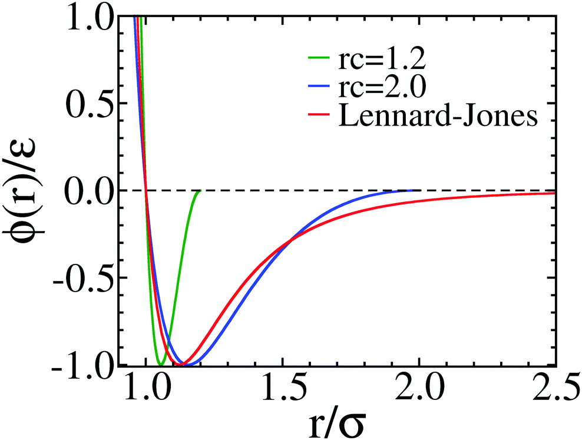

Mpipi model is a coarse-grain model for simulating IDP. The original code is implemented in LAMMPS but I am not familiar with LAMMPS either.
The original paper: Physics-driven coarse-grained model for biomolecular phase separation with near-quantitative accuracy. Nature Computational Science volume 1, pages 732–743 (2021). PDF file can be accessed from here
This model is different from other hps-based model is instead of using LJ12-6 potential, it used Wang-Frenkel potential.
\(\phi_{i,j}(r) = \epsilon_{i,j} \alpha_{ij} \left[\left(\frac{\sigma_{ij}}{r}\right)^{2\mu_{ij}}-1 \right] \left[ \left(\frac{R_{ij}}{r}\right)^{2\mu_{ij}}-1\right]^{2\nu_{ij}}\)
where,
\(\alpha_{ij}= 2\nu_{ij} \times \left(\frac{R_{ij}}{\sigma_{ij}}\right)^{2\mu_{ij}} \times \left[ \frac{(2\nu_{ij}+1)}{2\nu_{ij} \left( \left(\frac{R_{ij}}{\sigma_{ij}}\right)^{2\mu_{ij}}-1 \right) })\right]^{2\nu_{ij}+1}\)
They used: \(\nu_{ij}=1\) and \(R_{ij}=3\sigma_{ij}\)
\(\sigma_{ij}, \epsilon_{ij}, \mu_{ij}\) are parameters specified for each pair of interacting beads.
Implementation
To implement this functional form. We used TabulatedFunction in OpenMM.
First, we need to define the atom type of each residue, this definition is implemented in hps/parameters/model_parameters.py file as a dictionary, or github: here
Function is defined in hps/core/system.py. Here is the copied function:
def add_Wang_Frenkel_Forces(self, use_pbc: bool):
"""
MPIPI model. using TabulatedFunction for pair interaction.
More information about TabulatedFUnction can be found here:
http://docs.openmm.org/7.2.0/api-c++/generated/OpenMM.Discrete2DFunction.html
"""
wang_frenkel_cutoff = 2.5 * unit.nanometer
"""
In the model module, we only call this function when the model is mpipi so the following condition likely to be
true. But to be sure, we still check here.
"""
assert self.model in ['mpipi'], "Wang-Frenkel is only used in Mpipi model."
table_eps = model_parameters.parameters[self.model]['eps_ij']
table_eps_ravel = table_eps.ravel().tolist()
table_sigma = model_parameters.parameters[self.model]['sigma_ij']
table_sigma_ravel = table_sigma.ravel().tolist()
table_nu = model_parameters.parameters[self.model]['nu_ij']
table_nu_ravel = table_nu.ravel().tolist()
table_mu = model_parameters.parameters[self.model]['mu_ij']
table_mu_ravel = table_mu.ravel().tolist()
table_rc = model_parameters.parameters[self.model]['rc_ij']
table_rc_ravel = table_rc.ravel().tolist()
# number of atom types in model. currently with protein, there are 20.
n_atom_types = table_sigma.shape[0]
# eps, sigma, nu, mu, rc: load from tabular table
"""
Note: here we use abs function in ((rc/r)^(2*mu)-1)^(2*nu) because otherwise, nu added by parameters is float.
when r>rc, produces this is negative and non-integer power of float is nan.
"""
energy_function = 'eps * 2*nu*(rc/sigma)^(2*mu) * ((2*nu+1)/(2*nu*((rc/sigma)^(2*mu)-1)))^(2*nu+1)'
energy_function += '* ((sigma/r)^(2*mu)-1 )* abs((rc/r)^(2*mu)-1)^(2*nu);'
energy_function += 'eps = eps_table(id1, id2); sigma = sigma_table(id1, id2);'
energy_function += 'nu = nu_table(id1, id2);'
energy_function += 'mu = mu_table(id1, id2);'
energy_function += 'rc=rc_table(id1, id2)'
self.wang_Frenkel_Force = mm.CustomNonbondedForce(energy_function)
self.wang_Frenkel_Force.addTabulatedFunction('eps_table', mm.Discrete2DFunction(n_atom_types, n_atom_types,
table_eps_ravel))
self.wang_Frenkel_Force.addTabulatedFunction('sigma_table',
mm.Discrete2DFunction(n_atom_types, n_atom_types,
table_sigma_ravel))
self.wang_Frenkel_Force.addTabulatedFunction('nu_table', mm.Discrete2DFunction(n_atom_types, n_atom_types,
table_nu_ravel))
self.wang_Frenkel_Force.addTabulatedFunction('mu_table', mm.Discrete2DFunction(n_atom_types, n_atom_types,
table_mu_ravel))
self.wang_Frenkel_Force.addTabulatedFunction('rc_table', mm.Discrete2DFunction(n_atom_types, n_atom_types,
table_rc_ravel))
self.wang_Frenkel_Force.addPerParticleParameter('id')
for i, atom in enumerate(self.atoms):
self.wang_Frenkel_Force.addParticle((self.particle_type_id[i],))
if use_pbc:
self.wang_Frenkel_Force.setNonbondedMethod(mm.NonbondedForce.CutoffPeriodic)
else:
self.wang_Frenkel_Force.setNonbondedMethod(mm.NonbondedForce.CutoffNonPeriodic)
self.wang_Frenkel_Force.setCutoffDistance(wang_frenkel_cutoff)
# set exclusion rule
bonded_exclusions = [(b[0].index, b[1].index) for b in list(self.topology.bonds())]
self.wang_Frenkel_Force.createExclusionsFromBonds(bonded_exclusions, self.bonded_exclusions_index)- line 15-28: read the numpy array define \(\epsilon_{ij}\), \(\nu_{ij}\), \(\mu_{ij}\), and \(R_{ij}\)
- line 38-43: define the energy function to pass into
CustomNonbondedForce - line 46-55: let openMM knows where to get
eps_tableand other tabulated variables - the only Per-Particle-Parameter is the
idof the particle, this isidof the residue type which is defined inmodel_parameters.py - Other lines are self-explained.
The above code used global cutoff for Wang-Frenkel potential is 2.5nm. As stated in the paper, authors used the cutoff for each pair interaction is \(3\sigma\). To do so, we can add the stepsize function before the energy function. Step function in openMM work as: step(x)=0 if x< 0 and 1 if x>=0.
We can add: step(rc-r)*eps... to the energy function. So, if \(r \gt rc \Rightarrow rc-r \lt 0 \Rightarrow step(rc-r) =0\)
TabulatedFunction:
This is an interesting point from computational perpective.
More information about TabulatedFunction can be found in OpenMM documentation here
Here, I will use 2D Discrete function.
The function works as follow: Discrete2DFunction(xsize, ysize, val)
the tabulated values of the function f(x,y), ordered so that values[i+xsize*j] = f(i,j). This must be of length xsize*ysize.
This is the reason why I use ravel() function from python to covnert 2D array to 1D array above.
In this code, I call:
\(\epsilon_{ij}\) = eps,
\(\nu_{ij}\) = nu,
\(\mu_{ij}\) = mu,
\(R_{ij}\) = rc
Each particle has Per-Particle-Parameter: id
Here, we define, i.e: eps is a tabulated function: eps = eps_table(id1, id2). The value will be extracted from particle id
In my computer, the last part of the energy function: ((rc/r)^(2*mu)-1)^(2*nu) will be nan when r>rc. This is very strange since nu is loaded as float but 2*nu will always be an even number. My computer doesn’t know that by some rounding rules of floating point. when r>rc: rc/r<1, rc/r-1<0, and non-integer number power of negative value is NaN.
That’s why I used the abs function before this part as the power is even so they are equivalent.